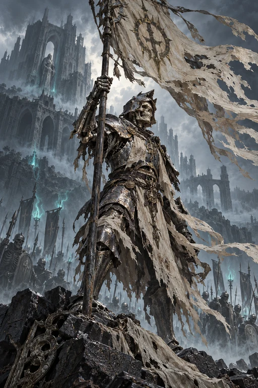
碎骨执旗兵
xb01 · 普通单位阵亡：其他己方单位各＋1。每张实体每场战斗限一次。

阵亡：其他己方单位各＋1。每张实体每场战斗限一次。
部署：选择己方弃牌区一名普通单位回到手牌。
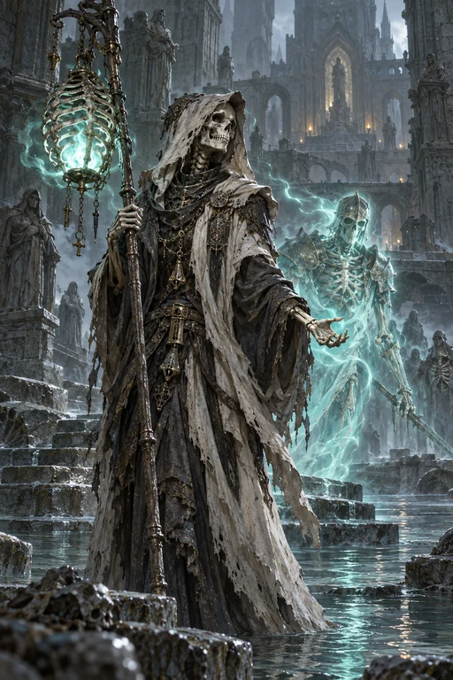
部署：复活一名基础战力不超过2的己方非间谍普通单位，不触发部署。
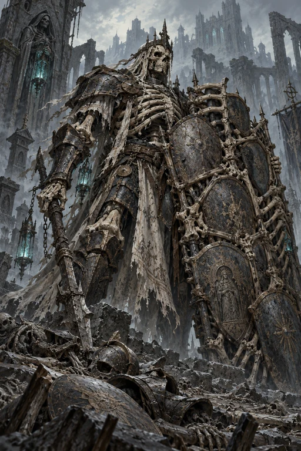
己方弃牌区每有一张单位牌，自身条件战力＋1。
部署：对一名敌方单位造成2点伤害。
阵亡：抽1张牌。每张实体每场战斗限一次。
部署：可牺牲另一名己方普通单位，抽2张牌。
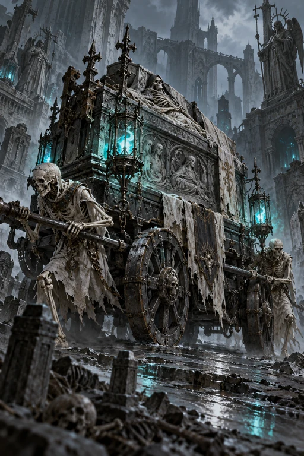
部署：另一名己方单位＋2。
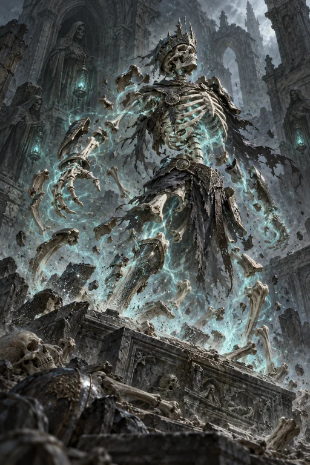
复活一名基础战力不超过4的己方非间谍普通单位，不触发部署。
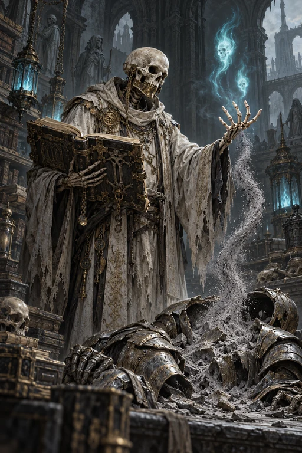
部署：可牺牲另一名己方普通单位，抽2张牌。
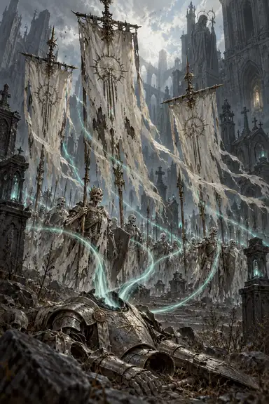
选择己方一排。每当己方单位阵亡，该排剩余单位各＋1；最多触发3次。
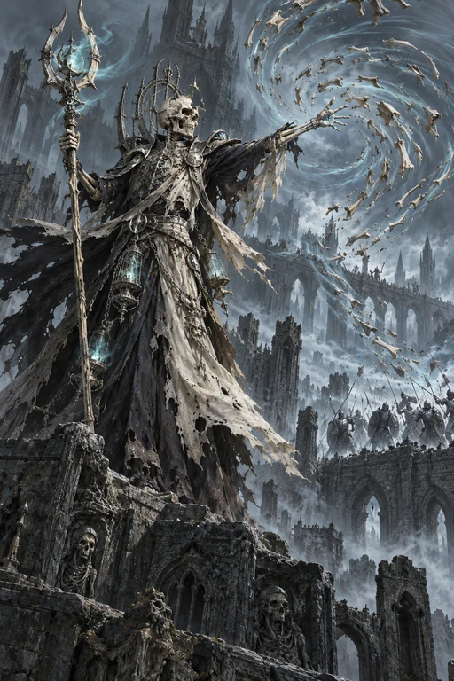
部署：选择敌方一排，对该排每名单位造成2点伤害。
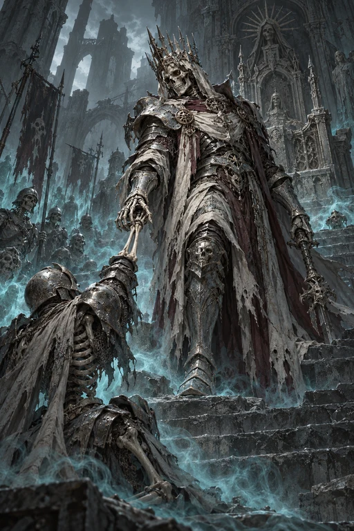
部署：复活一名基础战力不超过4的己方非间谍普通单位，不触发部署。
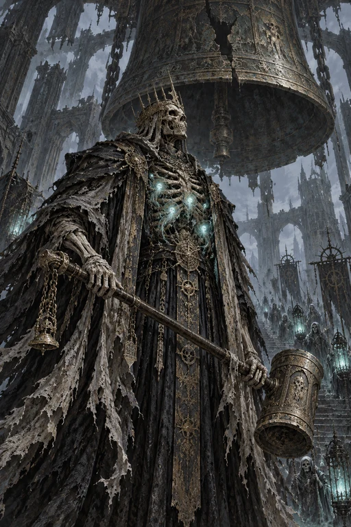
本场战斗每阵亡过一名己方普通单位，自身条件战力＋1。重复阵亡也计数。
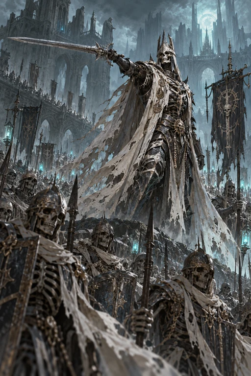
部署：其他己方单位各＋1。
部署：抽2张牌。阵亡：抽1张牌，阵亡效果每张实体每场战斗限一次。
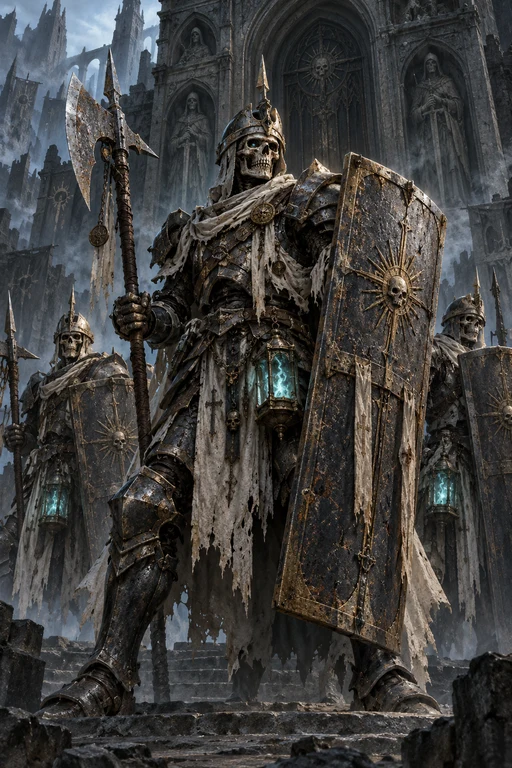
同排每有一名其他己方单位，自身条件战力＋1。
部署：抽1张牌。
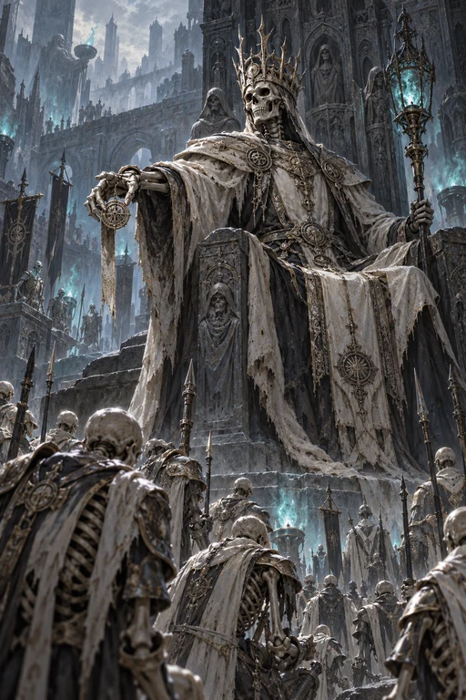
整场一次：复活一名基础战力不超过4的己方非间谍普通单位，不触发部署。远征不启用领袖。
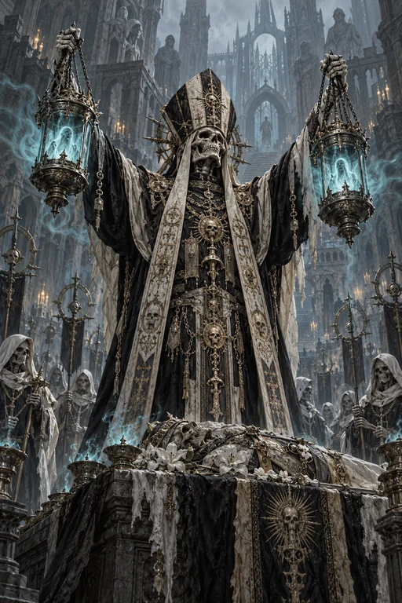
整场一次：抽2张牌。远征不启用领袖。
部署：选择敌方一名单位吸血2。吸血：造成伤害后，自身增加实际扣除的战力，最多等于目标受击前战力。
敌方场上每有一名带有伤害的单位，自身条件战力＋1。
部署：自身受到1点伤害，然后抽2张牌。
部署：对一名已有伤害的敌方单位造成3点伤害。
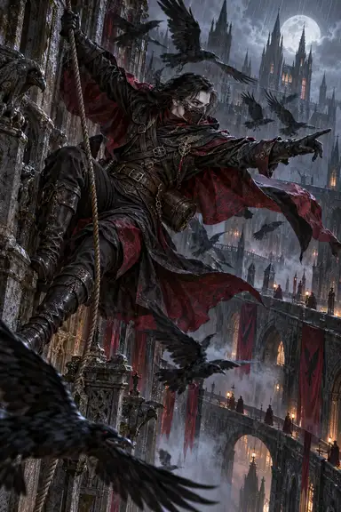
部署：移动另一名己方普通单位到另一战列，并使其＋1。
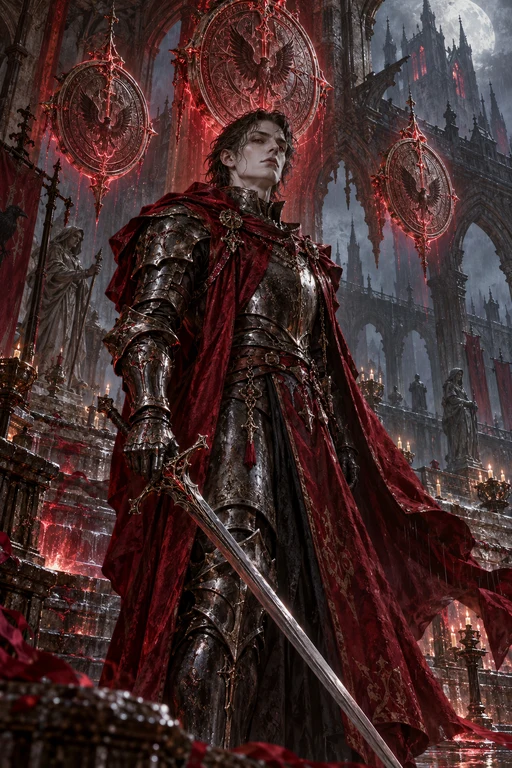
己方每有一张在场持续术，自身条件战力＋1。
部署：可牺牲另一名己方普通单位，自身＋4。
部署：另一名己方单位＋3。
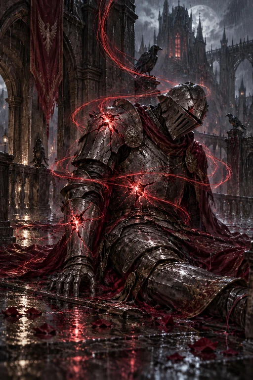
选择敌方一名单位。打出时及之后两次己方出牌结束后，对其造成1点伤害；目标离场后停止。
选择一名己方单位，使其＋4。
部署：对敌方所有已有伤害的单位各造成2点伤害。
部署：摧毁双方场上任意一张持续术，然后抽1张牌。
部署：选择敌方一名单位吸血3。
敌方场上每有一名带有伤害的单位，自身条件战力＋2。
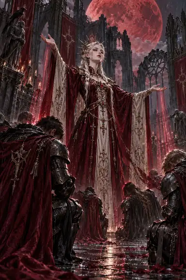
部署：其他己方单位各＋2。
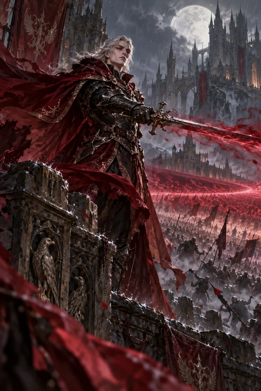
部署：对敌方一排所有单位各造成2点伤害。
部署：选择敌方一名单位吸血1。造成伤害后，自身增加实际扣除的战力。
部署：选择己方一排，该排单位各＋1。
整场一次：选择敌方一排，对该排所有单位各造成2点伤害。远征不启用领袖。
整场一次：选择己方一排，该排单位各＋2。远征不启用领袖。
本排没有其他己方单位时，自身条件战力＋3。
部署：移动一名敌方普通单位到其另一战列。
部署：可与一名敌方单位互相造成2点伤害。
部署：对一名敌方单位造成3点伤害。
同排每有一名其他己方单位，自身条件战力＋1。
部署：选择己方一排，该排单位各＋1。
对面同排每有一名普通单位，自身条件战力＋1。
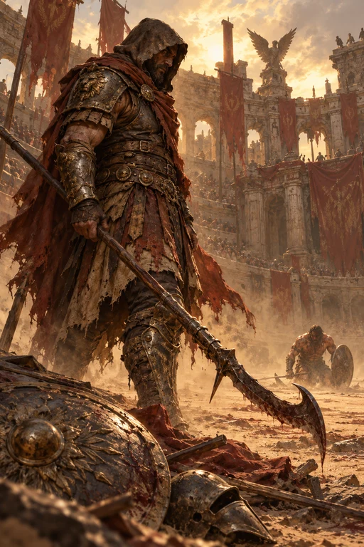
部署：对一名已有伤害的敌方单位造成3点伤害。
选择己方一排。打出时及之后两次己方出牌结束后，该排单位各＋1。
选择一名敌方单位，造成4点伤害。
部署：移动另一名己方普通单位到另一战列，使其＋3。
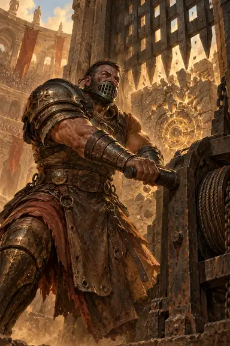
部署：摧毁双方场上任意一张持续术，然后抽1张牌。
本排没有其他己方单位时，自身条件战力＋3。
部署：对敌方一排所有单位各造成2点伤害。
部署：选择己方一排，该排单位各＋2。
部署：可与一名敌方单位互相造成3点伤害。
部署：移动一名敌方普通单位到其另一战列。
部署：另一名己方单位＋1。
整场一次：选择己方一排，该排单位各＋2。远征不启用领袖。
整场一次：抽2张牌。远征不启用领袖。